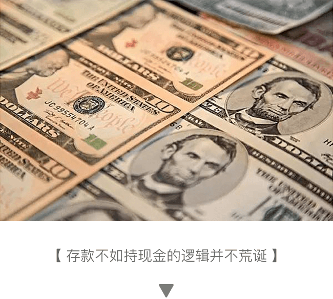
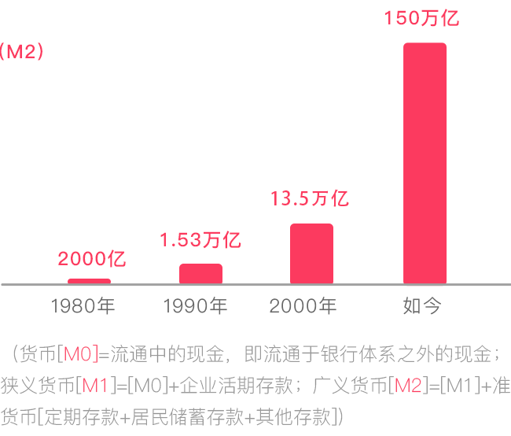
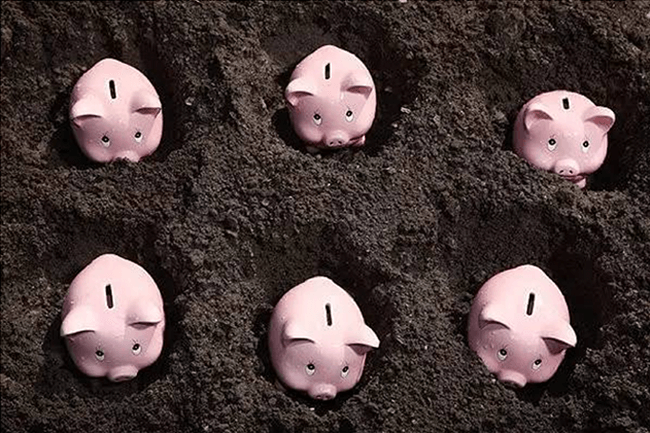
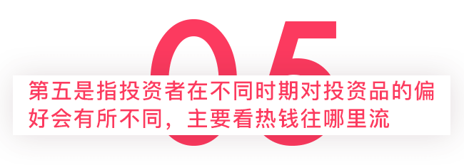
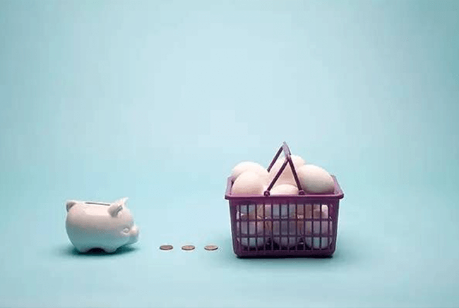

最近美元指数上涨、本币贬值速度开始加快，大家的恐慌情绪开始蔓延，现在连以美元计价的资产都不安全，真不知道该持有什么。既然大家都觉得持有现金不安全，存银行利率又太低，换美元受额度限制，买房又怕买在高点。那么，有什么办法让你手中的钱不贬值呢？

记得90年代之前，银行门口还有“储蓄光荣，为国家建设而储蓄”的宣传贴，迄今为止，国内70岁以上的老人中大部分的理财方式还是把所有的钱都存银行。但事实证明，只储蓄而不去配置其他资产的人已经成为社会最悲惨的一族——省吃俭用存下来的积蓄早被巨量的新发货币给稀释掉了。

通过储蓄而获得的增值幅度，相比货币的发行规模，相比房价的涨幅，相比各类生活费用的上涨幅度，基本可以用龟兔赛跑来形容。货币如此之泛滥，储蓄利率又跑不赢CPI，若持有现金并压箱底，肯定比把钱存到银行的收益率高。
投资要取得高收益，一般都需要做与众不同的事情。我记得1988年那次高通胀，大家几乎都是拿着第三套人民币去抢购商店里仅存的货品（第四套人民币1987年才开始小批量发行，即便持有1990年之前的版本的第四套人民币至今，也非常值钱了），有不少人甚至买了几大箱卫生纸，被戏称十年都用不完。如果大家都去抢购商品的时候，你看着潮水般的人群都去做同一件事情，不如离他们而去，默默地把原本也准备用来抢购的纸币收藏起来。
我在1985年大学毕业刚参加工作的时候，也被单位要求购买国库券，这是为了支持国家建设。但我在国债到期之后，并没有像别人那样急着去兑现。当时我就想，大家都去兑现，随后到期国库券都被销毁，没有兑现的岂不是很稀缺了？更何况国库券是国家的借条，今后随时可以兑现。事实证明，我当初的想法是对的，90年代之前的国库券价格迄今也有几倍到几十倍的涨幅。
其实，把钱一味地压箱底也未必是好事，把积蓄变成各种稀缺性或有成长性的资产，即把钱埋到资产上或许才是健康的。
如今，该把钱埋到哪类资产上当前的M2已经达到151万亿，前九个月贷款又增长了12%，货币规模的增长总是远超GDP，几乎看不到去杠杆的迹象。按我的估算，今后五年广义货币规模还将维持10%以上的增速，资产荒的格局短期内难以改变。
因此，持有货币的风险依然很大。那么，应该把钱埋到哪类资产上去呢？我觉得，可以从资产的配置、估值、稀缺性、成长性和投资者的投机（流动性）偏好五个维度来选择资产。

首先看居民家庭的资产配置结构。房产的配置大约要占到居民家庭总资产的65%左右，显然过高了，储蓄大约为18%，也是太高了；银行理财加信托和保险产品超过10%，权益类相关资产仍然偏低，大约只有4%左右，外汇资产只有1.6%。因此，换汇是第一考虑的选择，一个全球货币第一大国，居民的资产配置一定要有一定比例的外币资产，美国、欧盟、日本等货币规模远不如中国，但当地居民配置的外币资产都占一定比例。
总体看，无论是国内的房地产还是A股，估值水平都不便宜，这是我一贯的观点，也符合资产荒的逻辑——既然资产都短缺了，那么资产就不会便宜。不过，海外资产的价格就相对便宜，如H股就比A股便宜。这也可以解释中国今年前三季度成为全球海外并购额第一的国家，且并购规模已经超过去年全年的水平。不过，从长期看，由于利率水平仍有一定的下行空间，这对于债市和股市都是有利的。
此外，黄金的价格相对低估，因为国际、国内的金价基本一致，所以，它是资产荒中比较罕见的未被高估的资产，且可以抵御人民币贬值风险。故从估值角度看，黄金值得长期投资，但黄金的短期走势恐怕会受到美元加息和通胀低于预期这两个负面影响。
稀缺至少是由两种原因造成的，一是自然形成的原因，如翡翠就只有缅甸有，随着收藏量的不断增加，现在越来越稀缺了。又如，茅台酒只能在茅台镇生产，它作为国内第一品牌的白酒，自然也是稀缺的。如2006年茅台的股价是所有A股中最贵的，但10年之后，当初股价最高的茅台又涨了八倍。这也说明，投资稀缺的理念从古至今都是对的。
导致稀缺的另一个原因是人为造成的，即管制引发短缺。如我国对土地的管制，导致一二线城市住宅用地不足，从而引发房价暴涨。股票的发行同样也是受管制的，其目的是为了维持市场稳定。在这一背景下，“壳”成为资源，小市值股票因稀缺而备受追捧，长期收益率也很高。
如新兴产业的成长性很好，所以股价的涨幅也会超过周期股，创业板的走势长期强于主板。不过，A股市场的成长性股票也存在估值普遍偏高的问题，不妨去挖掘新三板中的成长股。目前新三板的家数已经超过9000家，但研究投入严重不足，故新三板市场是非常值得去开发的金矿。

如目前热钱都流向楼市，投机偏好也在楼市。但热钱流入楼市还能持续多久，还会集中在哪些城市，是决定楼市是否还值得投机的一个重要因素。去年上半年的热钱在股市，所以大家都说，“风刮起来的时候，猪都能飞起来”，但问题是风一旦不刮了，猪就重重地摔在地上，迄今都起不来。

应该说，国人的投机偏好明显强于其他国家或民族，这也可以解释一些资产价格估值过高的原因。你会发现，凡是本土可以定价的资产，估值都会偏高；凡是本土定不了价的资产，国人的投机偏好会大幅降低。
未来如果通胀能起来，则周期股、大宗商品、黄金等会有良好表现，但对楼市和债市则不利。但目前看，通胀似乎还远，全球经济下行的势头仍在延续。但既然是长期投资，就不应该太注重当下的热钱流向，最好能够展望未来十年的经济特征与经济格局。如前所述，跟风者是很难赚到大钱的，只有做到与众不同，甘于承受不被认可的寂寞和煎熬，才有可能喜从天降，获得高回报。
不过，未来又预测不准，如我们在80年代的时候，盼望着到2000年实现四个现代化，大家几乎都不曾预见到20年后会进入一个互联网信息时代。
所以，你现在所埋下的单，也只是你想象中的未来。投资的成功与否，永远是一个概率事件，这也是投资的魅力所在。但只要相信绝大部分人的眼光都是短浅的，你则努力地把眼光放远，把握住机会的概率就会增加。